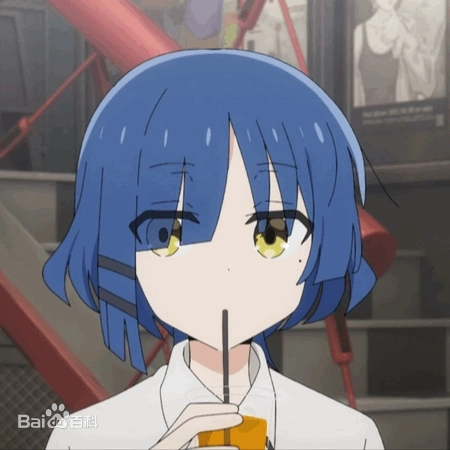
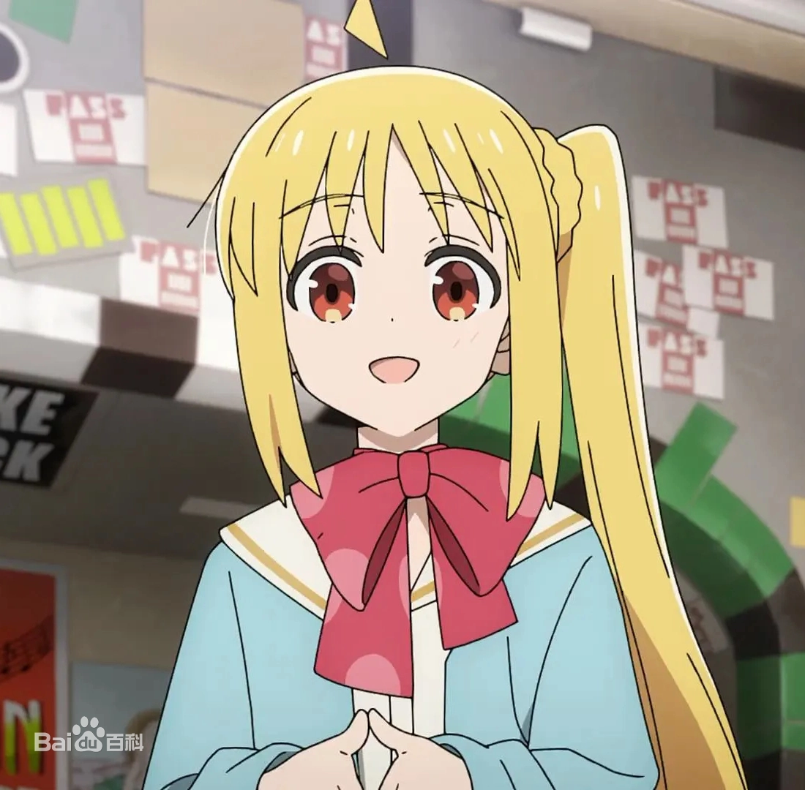
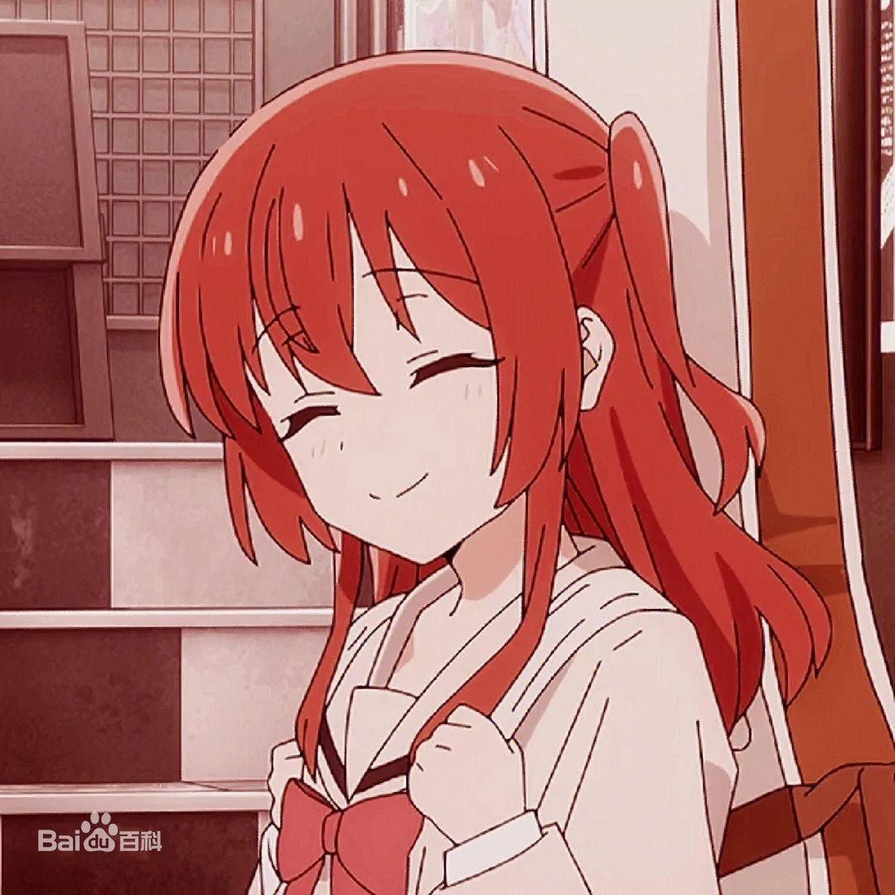

|
|
|
|
角色介绍
|
后藤一里
配音 青山吉能
后藤独是一个性格孤僻的吉他手，因机缘巧合先后认识了伊地知虹夏（いじちにじか）、山田凉（山田 リョウ）、喜多郁代（きた いくよ）并组成了“纽带乐队”（�Y束バンド），后藤独为乐队主吉他手。 |
|  |
山田凉
配音 水野朔
下北泽高中二年级生。负责纽带乐队的贝斯和作曲，伊地知虹夏的挚友。是喜欢被别人叫做怪人的怪人。对音乐抱有一定的执著，过去曾组成的乐队在行为上和曲风失去个性走向大众化后退团，之后在虹夏的邀约下才重新追逐音乐梦。
比起盲目的追求流行，更加注重个性，认为“一旦舍弃了个性，就跟死了没区别” |
|  |
伊地知虹夏
配音 铃代纱弓
担任纽带乐队的爵士鼓鼓手。下北泽高中二年级,现已升至高中三年级，备考大学中。精力充沛、个性开朗、温柔善良的高中生，同时也是建立和统整纽带乐队的队长。有一个在下北泽展演厅“STARRY”担任店长的姐姐伊地知星歌，并从小在姐姐的影响下了解许多乐队相关的文化，并且爱上音乐，为了完成自己的梦想而组建了纽带乐队。 |
|  |
喜多郁代
配音 长谷川育美
是个喜欢与别人交流，擅于社交的女孩，但不喜欢别人用“郁代”称呼自己。因为憧憬山田凉同时缺乏乐队常识而盲目自信地加入纽带乐队，导致在纽带乐队首次Live前因为不会吉他而临阵脱逃，而后在后藤独的帮助下重新回到乐队中担任主唱和吉他手，并在后藤独的指导下学习吉他。 不断深入了解独后，意识到她的巨大潜力，决心成为后藤独的坚实后盾。 |
 |
伊地知星歌
配音 内田真礼
虹夏的姐姐，LIVE HOUSE“STARRY”的店长。圣诞夜是她的生日，初次登场时29岁。在故事中迎来了30岁的第一年，31岁的第二年。曾经是一名乐队成员（吉他手），实力强大，甚至有唱片公司找她签约的机会。虽然口头上对虹夏和结束乐队很严厉，但实际上比任何人都关心结束乐队，特别是对虹夏的事情一直牵肠挂肚，周围的人都察觉到了她是个重度的姐控。尽管她的态度和性格很冷淡，但她喜欢可爱的东西，常常抱着毛绒玩具，还收藏着女仆装和女学生服等服装用于欣赏。同时她也是个容易流泪的人。 |
|
广井菊里
配音 千本木彩花
乐队SICK HACK的贝斯手和歌手以及领队，在新宿的一家名为“FOLT”的Livehouse进行演出，乐队的表演风格为迷幻摇滚
非常喜欢喝酒，长期处于醉酒状态以忘掉未来的担忧，自己称之为幸福螺旋。不过认真的时候则会马上恢复清醒。 |
|
|
|